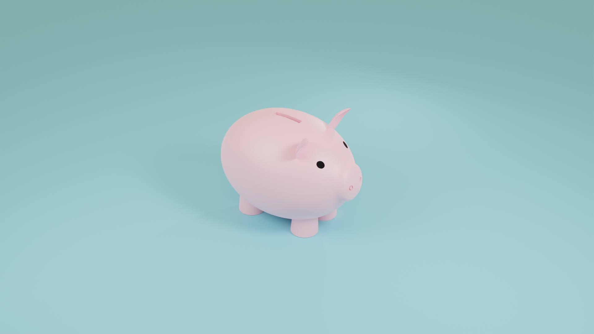
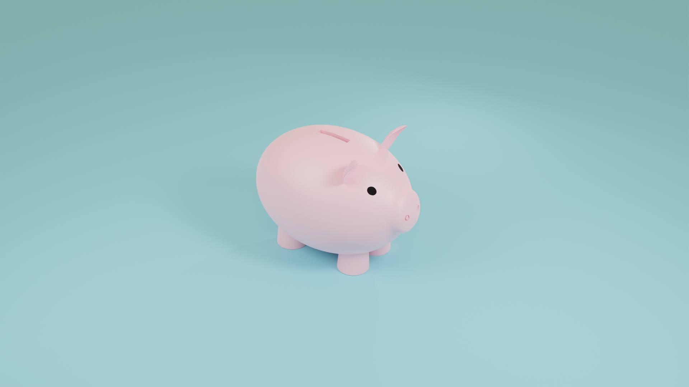

My Portfolio


Watch
My first big project, This was my first project where I really had to worry about topology and making sure my faces were pretty AND functional. The biggest downfall to doing this project is that I scoured the internet for reference images and now I get ads for watches everywhere.
Sunset
Sunset I really wanted to do a sunset. At first I wanted to do one over a field or behind a mountain but while I was playing with it I decided water looked really cool in this scene, the main goal was to get the perfect camera angle to catch a reflection path from the camera to the sun, in order to do this I had to animate the water and move my camera to get the perfect angle and shot. At one point I had the money shot and I accidentally started the animation again so the frame I was on moved then in my panic to fix it I accidentally moved the camera so I lost the spot, that was sad..


Low Poly
Isometric rooms are awesome, if you google isometric rooms then you'll come up with a load of cool stuff that people have done, since this was my second project it doesn't have a lot of the flair I would have liked to have had, but it was a fun project and it was fun to put random objects and ideas into the space.
Real Poly
After messing around with style and form, I've found that I prefer projects that lean towards realism rather than having a toon feel to them. I had a really fun time modeling the guitar and doing the cloth for the bedding was an interesting experience.
 

Torus
This was just something that I was playing with that I though looked pretty neat, other than the sphere in the center, there are no rounded edges.
Pig
A simple practice project to mess with round objects as well as super simple sculpting practice. Also it made my sister happy.
Godrays
This project was an experiment in lighting a scene in different ways, techincally it's still a WIP, but it's so close what I decided to throw it in, the main focus I wanted to work with are the rays coming through the window which are called godrays, they're great for a dusty room or for some super atmospheric or dramatic lighting.